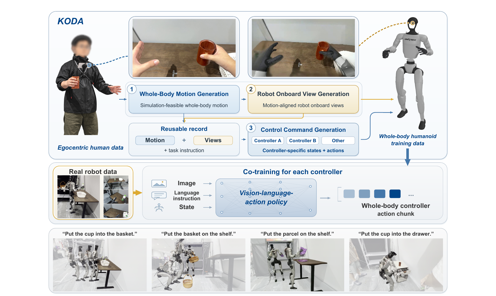
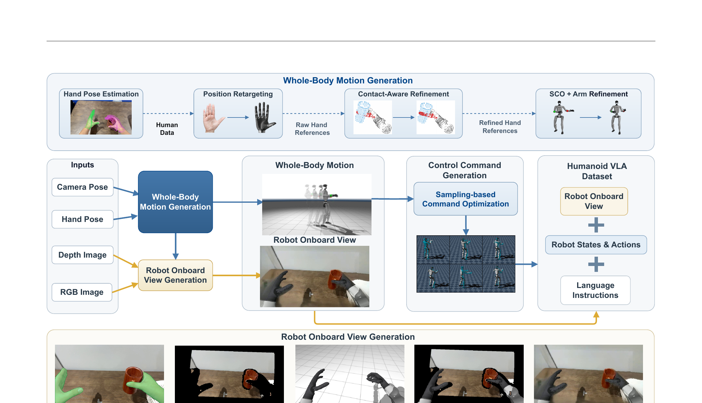
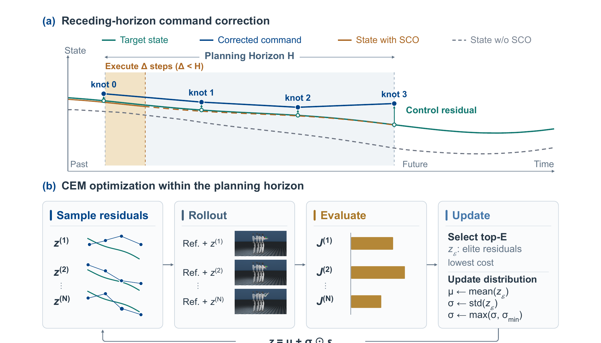
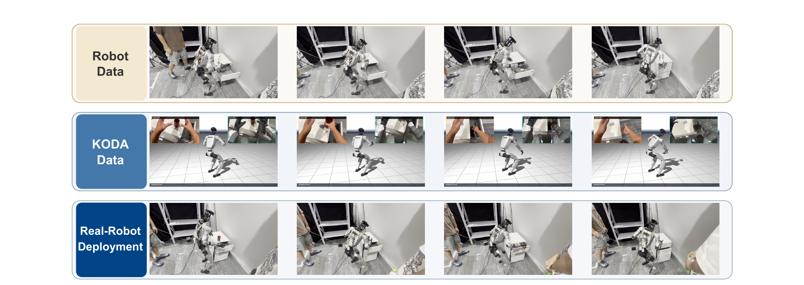

仿真 benchmark
未提供标准仿真任务成功率；仿真只用于运动优化与 rollout 跟踪误差诊断。
不要把人类视频直接翻译成某个控制器的标签；先生成一个与目标机器人本体对齐、但与具体控制接口解耦的 canonical record，再为 SONIC、HEFT 等控制器分别生成状态—动作标签。
Figure 1 是 thesis / system overview：解释 KODA 为什么存在、生成的数据处在什么位置、如何进入 VLA 训练。Figure 2 是 method / implementation overview：把三大模块拆成可执行的工程步骤。读图顺序应当是先 Figure 1 建立数据语义，再用 Figure 2 追踪信号。
输入是什么？人类胸前 RGB、深度、头/相机位姿、3D 手信号与语言指令。
中间产物是什么？目标机器人运动 + 与运动一致的机器人第一视角。
关键 claim 是什么？canonical record 可复用，但控制器标签要按接口重新实例化。
手如何 retarget？接触如何修正？全身运动如何在仿真中变得可执行？
人臂如何移除、场景如何重投影、机器人如何渲染并合成？
运动如何进一步转换成 SONIC / HEFT 的状态与动作标签？

| 背景 | 人类第一视角视频比人形机器人遥操作数据更容易规模化，但人手、机器人运动、相机视角和控制接口并不天然一致。 |
| 站在哪些工作上 | HAWOR 手姿估计、AnyTeleop 风格 retargeting、ScaleBFM、MJX/MuJoCo、Mink IK、DiffuEraser，以及 GR00T N1.7 VLA。 |
| 前人具体卡点 | HALOMI / EgoHumanoid 也做 ego-to-robot，但监督标签与专用 policy/controller 接口绑定，难以并入另一套既有 whole-body 数据。 |
| 核心 insight | 先对齐机器人运动与机器人观测，再把 controller-specific label generation 放到最后一层。 |
| 效果与代价 | 在 robot-OOD 上，相比 robot-only，SONIC +45 pp，HEFT +46.25 pp；代价是多级估计、仿真优化、渲染与 inpainting。 |
| 数据谱系 | 每任务 50 条真机示范/控制器 + 100 条人类示范，共 4 任务；人类数据通过 KODA 转成每套控制器的数据。 |
KODA 先把人类示范整理成可重复使用、不绑定最终部署控制器的 canonical record，再生成控制器专属标签。
| 阶段 | 方法 | 手腕位置误差 | 手腕旋转误差 | 相机/躯干位置误差 | 证据 |
|---|---|---|---|---|---|
| 全身运动 | Direct | 15.02 cm | 0.2046 rad | 16.27 cm | Table 4 |
| 全身运动 | SCO | 3.03 cm | 0.1106 rad | 5.39 cm | Table 4 |
| 全身运动 | SCO + arm IK | 0.33 cm | 0.0296 rad | 5.39 cm | Table 4 |
| SONIC rollout | SCO | 2.88 cm | 0.1292 rad | 3.20 cm | Table 4 |
| HEFT rollout | SCO | 2.94 cm | 0.0552 rad | 2.84 cm | Table 4 |
| 控制器 | 配置 | ID | Robot-OOD | 绝对下降 | 保留率 | 证据 |
|---|---|---|---|---|---|---|
| SONIC | 50 robot + 100 KODA / task | 72.5% | 48.75% | — | — | Table 1 |
| HEFT | 50 robot + 100 KODA / task | 76.25% | 51.25% | — | — | Table 1 |
| SONIC | robot-only | 62.5% | 3.75% | — | — | Table 1 |
| HEFT | robot-only | 68.75% | 5.0% | — | — | Table 1 |
这里的 OOD 是 robot-data OOD，不是 all-training-data OOD。测试中的棕瓶、白色包裹、倾斜篮把不在真机示范里，却出现在人类训练池中；每任务 100 条人类示范由 80 条 shifted + 20 条 matched 组成。
因此最准确的结论是：KODA 能把人类域已经覆盖的新外观/几何变化转移到机器人策略，而不是凭空 zero-shot 泛化到从未见过的对象。
| 控制器 | 配置 | 条件 | 成功数/总数 | 成功率 | 95% Wilson | 证据 |
|---|---|---|---|---|---|---|
| SONIC | 完整 KODA | ID | 58/80 | 72.5% | 计算中 | Table 1 |
| SONIC | 完整 KODA | Robot-OOD | 39/80 | 48.75% | 计算中 | Table 1 |
| HEFT | 完整 KODA | ID | 61/80 | 76.25% | 计算中 | Table 1 |
| HEFT | 完整 KODA | Robot-OOD | 41/80 | 51.25% | 计算中 | Table 1 |
四个任务：杯子入篮、包裹上架、篮子上架、杯子入抽屉。成功标准是完成放置，且没有摔倒或无法恢复的操作失败。
| 闭环性 | 真机是闭环 VLA 执行；tracking table 是仿真 rollout 诊断。 |
| 试验量 | 每任务/条件 20 次，四任务合并 n=80；但每训练配置只跑一次，没有跨 seed 方差。 |
| 基线公平性 | 主要基线是同一 backbone 的 robot-only 与内部模块消融；没有与 HALOMI/EgoHumanoid 做端到端成功率对齐。 |
| OOD 真实性 | 相对 robot demos 未见，但人类训练数据覆盖；不属于完全未见类别或新任务组合。 |
| 跨本体 | 未做。实验始终是 Unitree G1 + BrainCo hands；变化的是 controller，不是 morphology。 |
可支持：在同一目标本体和相机约定下，KODA 生成的对齐数据可以分别补充两种 whole-body controller 的数据集，并显著改善 human-covered 的 robot-OOD。
暂不能支持：任意人形本体通用转换、完全未见对象 zero-shot 泛化、或 KODA 必然优于 HALOMI/EgoHumanoid 的端到端结论。
它们当然也是 ego-to-robot：都从人类第一视角示范得到机器人学习信号。区别不在输入，而在最终监督标签停在哪一层。
| 不兼容层 | 为什么会冲突 | KODA 怎么处理 |
|---|---|---|
| 动作空间 | SONIC 是 64 维 body label + 12 维 hand；HEFT 是 29 关节 + 9 pelvis + 12 hand，共 50 维。 | 从同一 canonical motion 分别 rollout，重新生成各自 action。 |
| 状态分布 | 同一个参考运动，被不同 low-level controller 跟踪后，实际关节与姿态会有残差。 | 用该 controller 的 rollout 记录实际 state，而非复制理想轨迹。 |
| 观测—动作配对 | 人类画面中的手臂外观、相机运动与机器人执行不一致。 | 把图像重建成 motion-aligned 的 robot onboard view。 |
| 数据 schema | 已有 robot demos 已按某个 VLA/controller 预处理；接口不一致时无法直接 co-train。 | 最后一步做 controller-specific instantiation，匹配目标数据集 schema。 |
一条人类示范可写成：
经过运动与视角对齐，KODA 得到目标机器人 (R) 的 canonical record：
再用控制器 κ 的生成器 (G_\kappa) 实例化：
输出 76 维动作标签：64 body + 12 hand；状态也来自 SONIC rollout。
输出 50 维动作标签：29 joint + 9 pelvis + 12 hand；状态来自 HEFT rollout。

RGB/深度、相机位姿、双手 3D 信号和语言被同步成 50 Hz 序列。
估计 MANO 手姿，位置 retarget 到机器人手，并借助物体表面接触修正抓取几何。
在物理仿真中优化 torso、legs、arms，使 G1 能站稳并跟踪手腕。
相机跟随生成的机器人运动；场景点云和 robot render 通过深度遮挡关系合成。
SONIC 与 HEFT 分别接收优化过的参考命令，产生实际状态与动作标签。
同一语言任务下的图像、状态、动作打包为与目标 robot dataset 兼容的样本。
人类胸前相机和双手只给出稀疏约束。直接 IK 容易产生不可平衡、不可接触、控制器跟不上的轨迹。KODA 先构造手部目标，再用全身优化把它变成动力学上可执行的 G1 motion。
SCO 的本质可写成“从候选命令分布里反复采样，选择累计 tracking cost 最低的 elite，再更新分布”：
论文配置：50 Hz、horizon 40、每轮 80 个候选、8 轮；全身阶段 10 个 elites。这里的公式是对 CEM/SCO 过程的概括，不是论文新推导。

如果只把人臂抹掉或固定偏移相机，机器人看到的桌面、物体与自身手臂仍可能和动作轨迹错位。KODA 让相机位姿来自 canonical robot configuration，再做几何优先的合成：
| 观测处理 | ID | Robot-OOD | 说明 |
|---|---|---|---|
| No alignment | 62.5% | 18.75% | 原人类图像与机器人 action 错配 |
| Fixed offset | 63.75% | 23.75% | 固定相机偏移不能表达真实全身运动 |
| Motion-based reprojection | 66.25% | 37.5% | 相机随机器人 motion 重投影 |
| Full alignment | 72.5% | 48.75% | 再加人臂移除、机器人渲染与合成 |
KODA 把 canonical G1 轨迹当作共同的物理参考，再让 SONIC 与 HEFT 分别 rollout。两者共享 44 维状态 schema：29 维 body joints 与 3 维 projected gravity 来自各自 controller rollout；12 维 hand angles 来自几何重定向估计，并非执行器测得的手部状态。动作 schema 则直接不同。
| 生成方式 | ID | Robot-OOD | 解释 |
|---|---|---|---|
| Without SCO | 48.75% | 7.5% | 直接标签与真实 controller rollout 分布偏离 |
| With SCO | 72.5% | 48.75% | 在闭环中优化可跟踪命令，并记录相应 state/action |

“Controller-agnostic”是对最终部署接口而言，不是说数据生成过程完全不用控制器。Canonical motion 仍借助微调后的 ScaleBFM；canonical RGB、G1 形态、手型和相机也已经固定。将同一目标交给不同 controller，不等于原有观测—动作对无需重编译。
| 层 | 可复用内容 | 换接口必须重查 |
|---|---|---|
| Canonical record | 绑定本体与相机的 RGB、参考运动、指令 | 换机器人或相机时，需要重新 retarget / render；不是跨形态通用标签。 |
| 物理优化空间 | SCO 第二阶段对未来 pelvis 6 + body 29 = 35 维参考，10 个 knots 共 350 维做优化 | 不是直接在 SONIC 的 64 维 latent token 上搜索。参考仍须通过目标 controller rollout。 |
| SONIC 标签 | 64 body token + 12 hand = 76 维动作 | encoder、decoder、归一化、时序、checkpoint 必须成套。维数相同不保证 latent 语义相同。 |
| HEFT 标签 | 29 joint + 9 pelvis + 12 hand = 50 维动作 | pelvis 9 维含旋转编码、相对位移及绝对高度；不能把绝对高度再次累计。 |
| 状态与画面 | 44 维统一状态 schema；canonical 画面 | body/gravity 来自目标 rollout，hand 为几何估计；canonical camera 与新 rollout 只是近似对齐。 |
为什么不能只追求低腕误差：完整优化使 SONIC rollout 腕位置误差由 61.5 降到 2.88 cm，但相机旋转误差由 0.0784 变为 0.0808 rad，并非所有指标同时改善。优化结果必须分部位、分观测通道核验。
OOD 的关键限定：每任务每控制器 50 条机器人示范；新增 100 条人类示范中有 80 条覆盖 robot-shifted 条件。SONIC 的 OOD 均值 3.75%→48.75%，HEFT 5.0%→51.25%，是人类数据补齐机器人分布的证据，不能写成“所有训练数据都未见的 OOD”。
关联阅读：EgoHumanoid-V2 的 controller-consistent alignment · SONIC 的接口契约 · 六篇链路总览。未审计用户实际部署 wrapper。
| 真正新且有用 | 把 observation alignment 与 control-interface alignment 放在同一个 ego-to-humanoid 数据生成框架里；canonical record 明确了可复用边界。 |
| 最强实验信号 | 两个控制器的 robot-OOD 都随人类示范规模明显上升，且 full view alignment / command SCO 消融幅度大。 |
| 跨本体缺口 | 只验证 G1 + BrainCo；没有第二种 morphology、相机安装、手型或自由度。 |
| 统计缺口 | 每配置单次训练；预算子集独立采样而非 nested，论文未给采样比例细节、seed 方差或置信区间。 |
| 接触缺口 | 细粒度手—物交互仍不能完全复现，也不建模接触力；作者将 real-to-sim/contact modeling 列为未来工作。 |
| 比较缺口 | 没有与 HALOMI/EgoHumanoid 在同一 VLA、同一 controller、同一任务下直接比较。 |
至少需要第二种机器人形态，明确 canonical record 中哪些变量进入 embodiment-neutral task space，重新定义跨本体接触/可达性约束，并分别报告 view synthesis、controller rollout 和真机成功率。否则“可以适配”只是工程可行性推断，不是论文已经证明的结论。
当前方法没有完整建模接触力，也不能保证细粒度手—物交互被准确复现。
对 VLA / WAM，KODA 的产物是可训练的观测—状态—动作样本，不是可以忽略底层接口的万能人类数据。先冻结目标本体、controller checkpoint 和动作时间基准，再生成训练标签；换 controller 后重做标签与 rollout 验证，往往比只改动作头维度更重要。